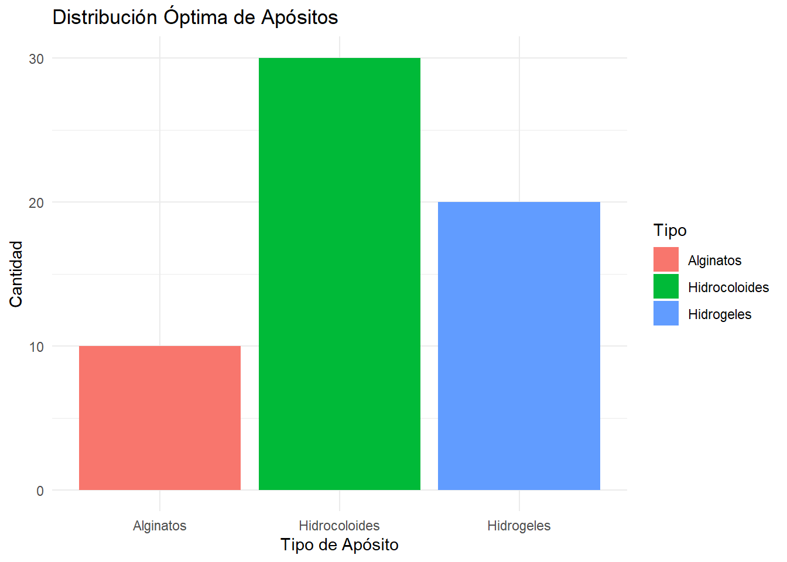

library(lpSolve)
# ============================================
# 1. Definición del problema
# ============================================
# Costos por unidad de cada tipo de apósito
costos <- c(10, 15, 25) # Hidrocoloides, Hidrogeles, Alginatos
# Restricciones (requerimientos mínimos para los pacientes)
requerimientos <- c(30, 20, 10) # Cantidad mínima necesaria de cada tipo de apósito
# Capacidad máxima disponible para cada tipo de apósito
capacidades <- c(50, 40, 30)
# Matriz de restricciones (filas: tipos de apósitos; columnas: variables)
matriz_restricciones <- rbind(
c(1, 0, 0), # Restricción para hidrocoloides
c(0, 1, 0), # Restricción para hidrogeles
c(0, 0, 1) # Restricción para alginatos
)
# Tipos de restricción (>= para requerimientos mínimos)
direcciones <- rep(">=", length(requerimientos))
# ============================================
# 2. Resolver el problema con lpSolve
# ============================================
resultado <- lp(
direction = "min", # Minimizar el costo total
objective.in = costos, # Función objetivo (costos)
const.mat = matriz_restricciones, # Matriz de restricciones
const.dir = direcciones, # Tipos de restricciones (>=)
const.rhs = requerimientos # Lado derecho (requerimientos mínimos)
)
# ============================================
# 3. Mostrar los resultados
# ============================================
cat("Costo mínimo total:", resultado$objval, "\n")Costo mínimo total: 850 cat("Cantidad óptima de apósitos:\n")Cantidad óptima de apósitos:names(resultado$solution) <- c("Hidrocoloides", "Hidrogeles", "Alginatos")
print(resultado$solution)Hidrocoloides Hidrogeles Alginatos
30 20 10 # ============================================
# Visualización gráfica del resultado
# ============================================
library(ggplot2)
df_resultados <- data.frame(
Tipo = c("Hidrocoloides", "Hidrogeles", "Alginatos"),
Cantidad = resultado$solution
)
ggplot(df_resultados, aes(x = Tipo, y = Cantidad, fill = Tipo)) +
geom_bar(stat = "identity") +
labs(title = "Distribución Óptima de Apósitos",
x = "Tipo de Apósito",
y = "Cantidad") +
theme_minimal()